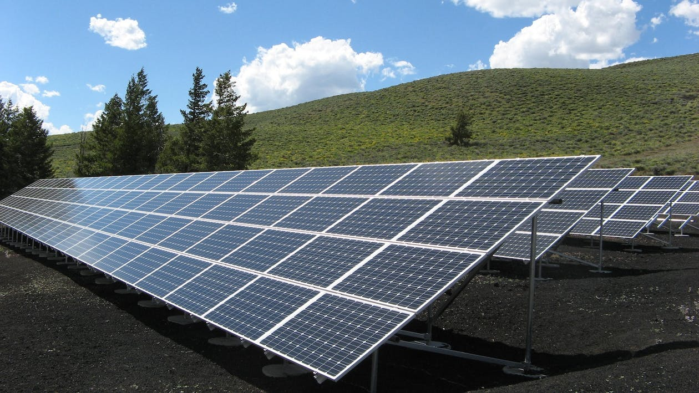
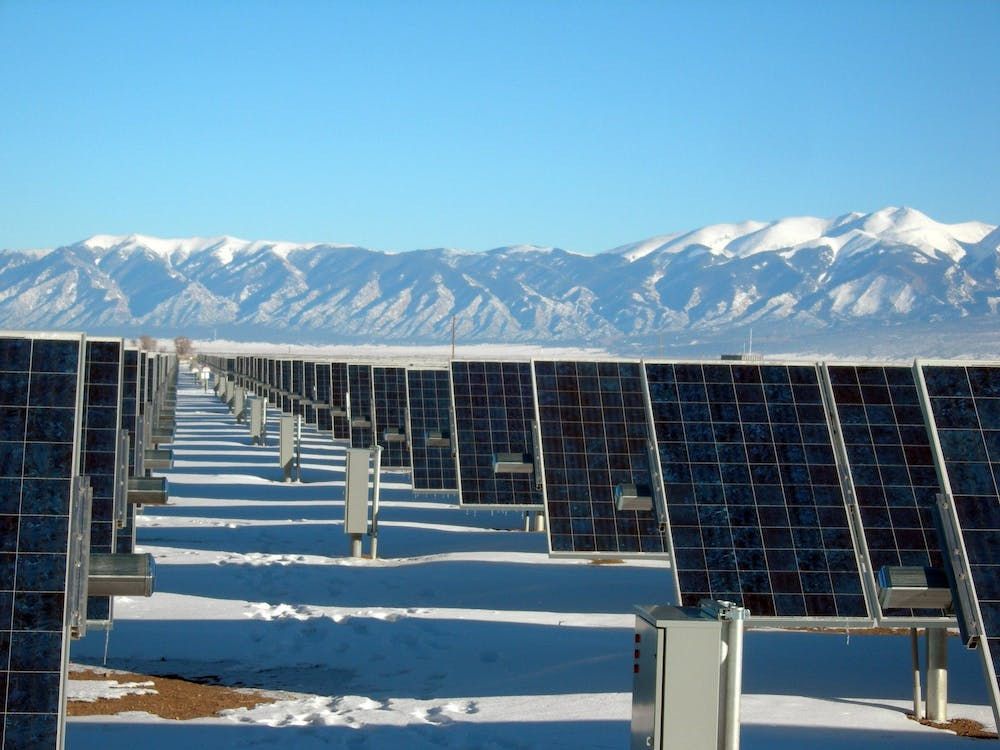

A energia solar é uma forma de energia renovável que vem do sol. A luz do sol é convertida em eletricidade através de painéis solares, que são compostos de células fotovoltaicas. Estas células capturam a luz do sol e convertem-na em eletricidade que pode ser usada para alimentar casas, empresas e até mesmo cidades inteiras.
A energia solar é uma fonte de energia limpa e sustentável, que não emite gases de efeito estufa ou poluentes nocivos para a atmosfera. Ao contrário dos combustíveis fósseis, que são finitos e não renováveis, a energia solar é infinita e não esgota recursos naturais. Além disso, a energia solar é cada vez mais acessível, com a redução do custo de instalação e manutenção dos painéis solares.
Os benefícios da energia solar são inúmeros. Além de ser uma fonte de energia limpa e renovável, ela pode reduzir significativamente a dependência de fontes de energia não renováveis e fósseis, como o petróleo e o carvão, que são responsáveis por grande parte das emissões de gases de efeito estufa no mundo.
Além disso, a energia solar é uma fonte de energia descentralizada, o que significa que ela pode ser produzida em pequena escala, em casas e empresas individuais, tornando a população mais autônoma em relação à energia que consome. E em áreas remotas, a energia solar pode ser a única fonte de eletricidade disponível.
Em resumo, a energia solar é uma solução limpa, sustentável e cada vez mais acessível para a demanda de energia do mundo. Com o desenvolvimento contínuo de tecnologias solares, é possível que a energia solar se torne a principal fonte de energia em um futuro próximo.